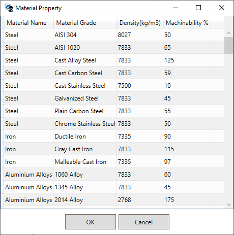
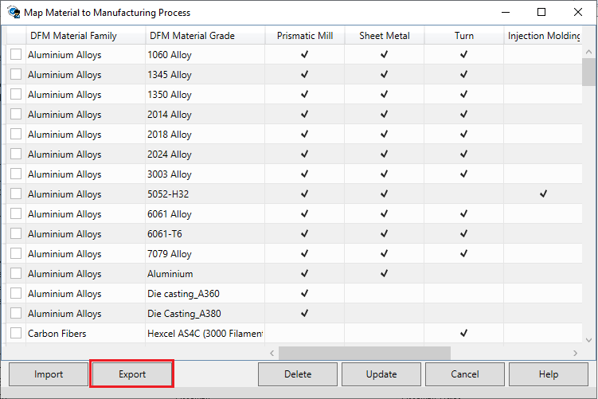
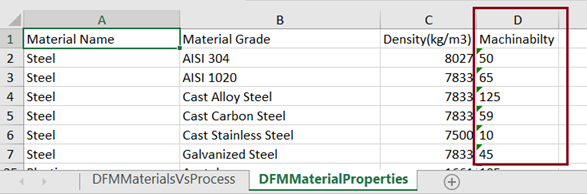
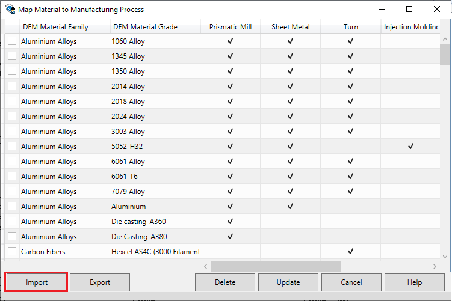

材料特性 ボタンをクリックすると、材料特性 ダイアログボックスが表示されます。このダイアログボックスでは、材料密度および材料の被削性を確認できます。
材料特性 ボタンをクリックすると、材料特性 ダイアログボックスが表示されます。このダイアログボックスでは、材料密度および材料の被削性を確認できます。ユーザーが 材料特性 ボタンをクリックすると、材料特性 ダイアログボックスが表示されます。このダイアログボックスでは、材料密度および材料の被削性を確認できます。

ルールマネージャ ダイアログボックスを開き、 材料のマッピング ボタンをクリックします。
材料のマッピング ボタンをクリックします。
エクスポート ボタンをクリックします。これにより、すべての材料およびその特性が Excel シートとしてエクスポートされます。

以下の表に示すように新しい材料およびその被削性の値を追加し、保存します。

インポート ボタンをクリックして、Excel シートをインポートします。
材料特性テーブルに追加された材料が、製造プロセスへの材料マッピング ダイアログボックス にも存在していることを確認してください。
